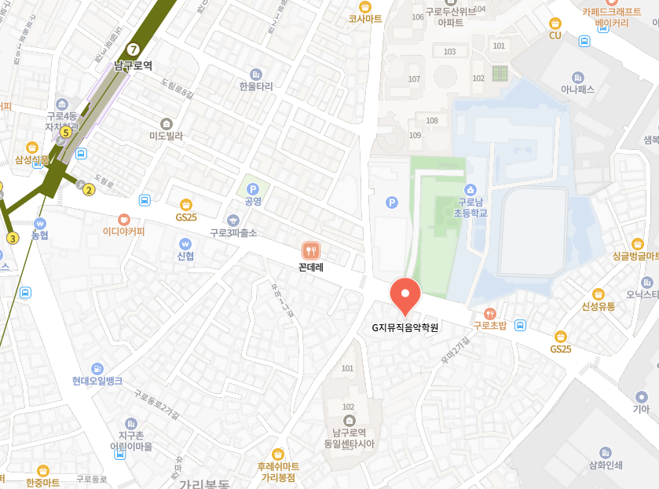

JUNIOR
즐겁게 듣고,
느끼고, 연주해요.
- ORFF
- PIANO
- VIOLIN
- GUITAR
- FLUTE
PROGRAM
아이의 성향과 속도를 살피는 눈높이 레슨으로 음악의 즐거움을 발견합니다.
JUNIOR
ADULT
AWARDS & PRESS
아이 한 명, 한 명의 가능성을 믿고 쌓아 온 시간. G MUSIC의 노력과 성과를 소개합니다.

서울특별시 구로구 음악 부문 우수 학원으로 선정되었습니다.

학원 재능개발 부문 대상을 수상했습니다.

소비자에게 신뢰를 주는 전문성을 인정받았습니다.

무대 위의 경험이 자신감으로 이어집니다.
G MUSIC STORY
연습실의 작은 집중과 무대 위의 반짝임.
G MUSIC의 성장 이야기를 기록합니다.


CONTACT
궁금한 점을 편하게 남겨 주세요.
G MUSIC ACADEMY가 함께 안내해 드릴게요.

네이버 지도에서 열기 ↗